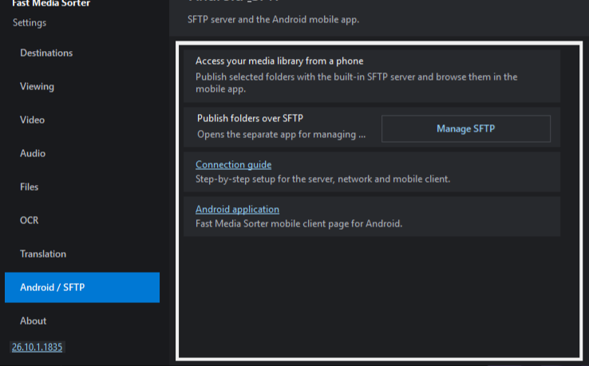

How to publish your folders for Android Как публиковать свои папки для Android Як публікувати свої папки для Android
Share folders from this PC with the FastMediaSorter app on your Android phone - over your home network, or over the internet. No cloud, no accounts: the phone connects straight to your PC over an encrypted SFTP connection. Sharing is handled by the companion Share Manager app that ships alongside the viewer. It is installed with the Full install type (the Compact type does not carry it) and works with the 64-bit viewer (FastMediaSorter_LITE.exe) on Windows 10 version 1607 or newer; the 32-bit viewer for Windows 7/8.1 does not offer it.
Делитесь папками этого ПК с приложением FastMediaSorter на телефоне Android - по домашней сети или через интернет. Без облака и аккаунтов: телефон подключается прямо к вашему ПК по зашифрованному соединению SFTP. Раздачей занимается отдельная программа Share Manager, которая идёт вместе с просмотрщиком. Она ставится с типом установки Полная (в типе Компактная её нет) и работает с 64-битным просмотрщиком (FastMediaSorter_LITE.exe) на Windows 10 версии 1607 и новее; в 32-битном просмотрщике для Windows 7/8.1 её нет.
Діліться папками цього ПК з застосунком FastMediaSorter на телефоні Android - домашньою мережею або через інтернет. Без хмари й акаунтів: телефон підключається прямо до вашого ПК зашифрованим з'єднанням SFTP. Роздачею опікується окрема програма Share Manager, що йде разом із переглядачем. Вона встановлюється з типом встановлення Повна (у типі Компактна її немає) і працює з 64-бітним переглядачем (FastMediaSorter_LITE.exe) на Windows 10 версії 1607 і новіше; у 32-бітному переглядачі для Windows 7/8.1 її немає.
#Before you startПрежде чем начатьПерш ніж почати
- One administrator approval, one firewall rule. The first time, Enable server features.. asks Windows for administrator rights once (a UAC prompt) and adds a Windows Firewall rule for the sharing program only. You can tick this during installation instead. Until it is done nothing is shared. To take it back: Manager settings.. - Network - «Switch off server features..». Одно подтверждение администратора и одно правило брандмауэра. В первый раз кнопка Включить функции сервера.. один раз запрашивает у Windows права администратора (окно UAC) и добавляет правило брандмауэра Windows только для программы раздачи. Это же можно включить галочкой при установке. Пока этого не сделано, ничего не раздаётся. Отменить: Настройки менеджера.. - Сеть - «Выключить функции сервера..». Одне підтвердження адміністратора і одне правило брандмауера. Уперше кнопка Увімкнути функції сервера.. один раз запитує у Windows права адміністратора (вікно UAC) і додає правило брандмауера Windows лише для програми роздачі. Це ж можна ввімкнути галочкою під час встановлення. Поки цього не зроблено, нічого не роздається. Скасувати: Налаштування менеджера.. - Мережа - «Вимкнути функції сервера..».
- The internet path. When sharing starts, unless Local network only (no internet access) is ticked (Manager settings.. - Network; it is off by default), Share Manager asks the router to open the port (UPnP/NAT-PMP) and checks, through the external service check-host.net, whether that port is visible from the internet. Tick it to keep everything inside your local network. Путь через интернет. Когда раздача запускается, если не отмечено Только локальная сеть (без доступа из интернета) (Настройки менеджера.. - Сеть; по умолчанию галочки нет), Share Manager просит роутер открыть порт (UPnP/NAT-PMP) и проверяет через внешний сервис check-host.net, виден ли этот порт из интернета. Отметьте её, чтобы всё оставалось внутри локальной сети. Шлях через інтернет. Коли роздача запускається, якщо не позначено Тільки локальна мережа (без доступу з інтернету) (Налаштування менеджера.. - Мережа; типово галочки немає), Share Manager просить роутер відкрити порт (UPnP/NAT-PMP) і перевіряє через зовнішній сервіс check-host.net, чи видно цей порт з інтернету. Позначте її, щоб усе залишалося всередині локальної мережі.
- What the phone may do. While sharing is on, the folders you ticked can be read over the network, and by default the phone can also add, rename and delete files in them. To make a folder browse-only, choose the real lock («Not writable at the server level») under Edit. Что может телефон. Пока раздача включена, отмеченные папки можно читать по сети, а по умолчанию телефон может и добавлять, переименовывать и удалять в них файлы. Чтобы папка только просматривалась, выберите в Редактировать настоящий запрет («Недоступно для записи на уровне сервера»). Що може телефон. Поки роздача ввімкнена, позначені папки можна читати мережею, а за замовчуванням телефон може й додавати, перейменовувати та видаляти в них файли. Щоб папку можна було лише переглядати, виберіть у Редагувати справжню заборону («Недоступно для запису на рівні сервера»).
- The QR code and the
.fmscfgfile are a key. They contain the auto-generated password (and the PIN, if one is set) - do not post them publicly. In the Share - access code window you can tick Keep the password out of the file/QR and pass it separately; whether the phone accepts a code without a password depends on the Android app version. Send by email.. warns the recipient in the message and leaves no copy of the file on the PC; a saved.fmscfgis readable by your Windows account only. QR-код и файл.fmscfg- это ключ. Они содержат автоматически созданный пароль (и PIN, если он задан) - не публикуйте их. В окне Поделиться - код доступа можно поставить галочку Не включать пароль в файл/QR и передать пароль отдельно; примет ли телефон код без пароля, зависит от версии Android-приложения. Отправить по почте.. предупреждает получателя в письме и не оставляет копию файла на компьютере; сохранённый.fmscfgдоступен только вашей учётной записи Windows. QR-код і файл.fmscfg- це ключ. Вони містять автоматично створений пароль (і PIN, якщо його задано) - не публікуйте їх. У вікні Поділитися - код доступу можна поставити галочку Не включати пароль до файлу/QR і передати пароль окремо; чи прийме телефон код без пароля, залежить від версії Android-застосунку. Надіслати поштою.. попереджає одержувача в листі й не залишає копії файлу на комп'ютері; збережений.fmscfgдоступний лише вашому обліковому запису Windows. - Stop when you are done. Press Stop sharing or quit Share Manager from the tray. The connection is encrypted and the phone pins your PC's key on first use - a later "key changed" warning is meaningful. Остановите, когда закончите. Нажмите Остановить раздачу или выйдите из Share Manager через трей. Соединение шифруется, а телефон запоминает ключ вашего ПК при первом подключении - позднее предупреждение "ключ изменился" важно. Зупиніть, коли закінчите. Натисніть Зупинити роздачу або вийдіть із Share Manager через трей. З'єднання шифрується, а телефон запам'ятовує ключ вашого ПК під час першого підключення - пізніше попередження "ключ змінився" важливе.
#Step by stepПошаговоПокроково
-
In Fast Media Sorter & Sharing for Windows, right-click the folder box and choose Share this folder with Android.., or open Settings (F2) → Server and resources → Android / SFTP and press Manage SFTP. Either one opens the Share Manager companion app.
В Fast Media Sorter & Sharing for Windows щёлкните правой кнопкой по строке каталога и выберите Поделиться этой папкой с Android.., либо откройте Настройки (F2) → Сервер и ресурсы → Android / SFTP и нажмите Управление SFTP. Любой из способов открывает отдельную программу Share Manager.
У Fast Media Sorter & Sharing for Windows клацніть правою кнопкою по рядку каталогу й виберіть Поділитися цією текою з Android.., або відкрийте Налаштування (F2) → Сервер і ресурси → Android / SFTP і натисніть Керування SFTP. Будь-який зі способів відкриває окрему програму Share Manager.

Settings: the Manage SFTP button opens the Share Manager.Настройки: кнопка Управление SFTP открывает Share Manager.Налаштування: кнопка Керування SFTP відкриває Share Manager. - The first time, Share Manager says Server features are off: press Enable server features.. and approve the administrator prompt (see Before you start). Until then nothing is shared; the viewer itself stays an ordinary local program. В первый раз Share Manager сообщает Функции сервера выключены: нажмите Включить функции сервера.. и подтвердите запрос администратора (см. «Прежде чем начать»). До этого ничего не раздаётся; сам просмотрщик остаётся обычной локальной программой. Уперше Share Manager повідомляє Функції сервера вимкнено: натисніть Увімкнути функції сервера.. і підтвердьте запит адміністратора (див. «Перш ніж почати»). До того нічого не роздається; сам переглядач лишається звичайною локальною програмою.
- Share Manager opens with your folder already added and sharing started - the Android access panel shows the PC's address. Add more folders with Add folder.. and tick only the ones to show on the phone; use Edit to set a real read-only lock, a PIN, allowed media types, a destination for copies, and more. Share Manager откроется с уже добавленной папкой, и раздача запустится - на панели Доступ с Android будет виден адрес ПК. Добавляйте другие папки кнопкой Добавить папку.. и отмечайте галочками только те, что должны быть видны на телефоне; кнопка Редактировать задаёт настоящий запрет записи, PIN, разрешённые типы медиа, папку-приёмник для копий и другое. Share Manager відкриється з уже доданою текою, і роздача запуститься - на панелі Доступ з Android буде видно адресу ПК. Додавайте інші теки кнопкою Додати папку.. і позначайте галочками лише ті, що мають бути видимі на телефоні; кнопка Редагувати задає справжню заборону запису, PIN, дозволені типи медіа, теку-приймач для копій тощо.
- Press the big Share button. The Share - access code window shows a QR code and the buttons Show QR code, Save .fmscfg file.., Send by email.. and Copy login/password. (When you started from the folder right-click, this window opens for you automatically.) Нажмите большую кнопку Поделиться. В окне Поделиться - код доступа появятся QR-код и кнопки Показать QR-код, Сохранить файл .fmscfg.., Отправить по почте.. и Скопировать логин/пароль. (Если вы начали с правого клика по папке, это окно откроется само.) Натисніть велику кнопку Поділитися. У вікні Поділитися - код доступу з'являться QR-код і кнопки Показати QR-код, Зберегти файл .fmscfg.., Надіслати поштою.. та Скопіювати логін/пароль. (Якщо ви почали з правого кліку по папці, це вікно відкриється саме.)
-
On the phone, open FastMediaSorter → Add resource → SFTP/FTP → Import from companion, then scan the QR code (or open the saved
.fmscfgfile). На телефоне откройте FastMediaSorter → Добавить ресурс → SFTP/FTP → Импорт из компаньона, затем отсканируйте QR-код (или откройте сохранённый файл.fmscfg). На телефоні відкрийте FastMediaSorter → Додати ресурс → SFTP/FTP → Імпорт із компаньйона, потім відскануйте QR-код (або відкрийте збережений файл.fmscfg). - Done - the shared folders open on the phone. Sharing keeps running from the tray even after you close the viewer; closing the Share Manager window just hides it to the tray while a share is active. Готово - общие папки открываются на телефоне. Раздача продолжает работать из трея, даже когда просмотрщик закрыт; закрытие окна Share Manager просто сворачивает его в трей, пока идёт раздача. Готово - спільні папки відкриваються на телефоні. Роздача працює далі з трея, навіть коли переглядач закрито; закриття вікна Share Manager просто згортає його в трей, поки триває роздача.
#Local network vs internetЛокальная сеть или интернетЛокальна мережа чи інтернет
There is one QR code / one .fmscfg that carries every way to reach your PC - local Wi-Fi, IPv6 and the internet address. The phone tries them all and connects over whichever is reachable, preferring the fast local one. One scan works both at home and away - you no longer choose a "network" up front.
Один QR-код / один файл .fmscfg содержит все способы связаться с ПК: локальную Wi-Fi, IPv6 и адрес из интернета. Телефон пробует их все и подключается по тому, что доступен, предпочитая быстрый локальный. Одно сканирование работает и дома, и вне дома - выбирать "сеть" заранее больше не нужно.
Один QR-код / один файл .fmscfg містить усі способи зв'язатися з ПК: локальну Wi-Fi, IPv6 та адресу з інтернету. Телефон пробує їх усі й підключається тим, що доступний, віддаючи перевагу швидкому локальному. Одне сканування працює і вдома, і поза домом - обирати "мережу" заздалегідь більше не потрібно.
Local networkЛокальная сетьЛокальна мережа
When the phone is on the same Wi-Fi as the PC, it just works - nothing to configure. This is the default and the most private option. Когда телефон в той же Wi-Fi, что и ПК, всё работает сразу - настраивать нечего. Это вариант по умолчанию и самый приватный. Коли телефон у тій самій Wi-Fi, що й ПК, усе працює одразу - налаштовувати нічого. Це варіант за замовчуванням і найприватніший.
InternetИнтернетІнтернет
When sharing starts, Share Manager tries to open the port automatically (UPnP/NAT-PMP) and then checks from the outside whether it really answers (through check-host.net). Both are skipped when Local network only (no internet access) is ticked. The Via internet line shows the address honestly - or tells you it's behind CGNAT. If the port isn't open, use How to set up internet access for a per-router port-forward guide and Test internet access to verify. If your PC has IPv6, that address is added too and works even behind CGNAT. Когда раздача запускается, Share Manager пробует открыть порт автоматически (UPnP/NAT-PMP), а затем проверяет снаружи, действительно ли он отвечает (через check-host.net). Если отмечено Только локальная сеть (без доступа из интернета), ни то ни другое не выполняется. Строка Через интернет честно показывает адрес - или сообщает, что вы за CGNAT. Если порт не открыт, откройте Как настроить доступ через интернет - инструкцию проброса порта под ваш роутер, и Проверить доступ из интернета для проверки. Если у ПК есть IPv6, его адрес добавляется тоже и работает даже за CGNAT. Коли роздача запускається, Share Manager пробує відкрити порт автоматично (UPnP/NAT-PMP), а потім перевіряє ззовні, чи він справді відповідає (через check-host.net). Якщо позначено Тільки локальна мережа (без доступу з інтернету), ні те, ні інше не виконується. Рядок Через інтернет чесно показує адресу - або повідомляє, що ви за CGNAT. Якщо порт не відкрито, відкрийте Як налаштувати доступ через інтернет - інструкцію проброса порту під ваш роутер, і Перевірити доступ з інтернету для перевірки. Якщо ПК має IPv6, його адресу додано теж, і вона працює навіть за CGNAT.
Per-model, step-by-step port-forwarding guides: Пошаговые инструкции проброса портов по моделям: Покрокові інструкції проброса портів за моделями: portforward.com (opens in a new tab) (откроется в новой вкладке) (відкриється в новій вкладці).
Finds your PC automaticallyНаходит ваш ПК самЗнаходить ваш ПК сам
On the same Wi-Fi the phone also discovers the PC by its host-key fingerprint. So even if the PC's local address changed since you scanned the code (a new lease, a reconnect), the phone reconnects on its own - no need to re-scan. В той же Wi-Fi телефон дополнительно находит ПК по отпечатку его ключа. Поэтому даже если локальный адрес ПК изменился после сканирования кода (новая аренда, переподключение), телефон переподключится сам - пересканировать не нужно. У тій самій Wi-Fi телефон додатково знаходить ПК за відбитком його ключа. Тож навіть якщо локальна адреса ПК змінилася після сканування коду (нова оренда, перепідключення), телефон перепідключиться сам - пересканувати не потрібно.
Manufacturer support:Поддержка производителей:Підтримка виробників: TP-Link (opens in a new tab) (откроется в новой вкладке) (відкриється в новій вкладці) · ASUS (opens in a new tab) (откроется в новой вкладке) (відкриється в новій вкладці) · Keenetic (opens in a new tab) (откроется в новой вкладке) (відкриється в новій вкладці) · D-Link (opens in a new tab) (откроется в новой вкладке) (відкриється в новій вкладці) · NETGEAR (opens in a new tab) (откроется в новой вкладке) (відкриється в новій вкладці) · Huawei (opens in a new tab) (откроется в новой вкладке) (відкриється в новій вкладці) · Xiaomi (opens in a new tab) (откроется в новой вкладке) (відкриється в новій вкладці) · MikroTik (opens in a new tab) (откроется в новой вкладке) (відкриється в новій вкладці)
#Other ways to connect your devicesДругие способы соединить ваши устройстваІнші способи з'єднати ваші пристрої
This page is about one way: your PC shares folders and the phone connects to it, at home or through your router. The portal Media exchange between your devices puts all the ways side by side - what each needs, what each does, and which program takes part.Эта страница об одном способе: ваш ПК раздаёт папки, а телефон подключается к нему - дома или через ваш роутер. Портал Обмен медиа между вашими устройствами ставит рядом все способы: что нужно каждому, что он делает и какая программа в нём участвует.Ця сторінка про один спосіб: ваш ПК роздає теки, а телефон підключається до нього - вдома або через ваш роутер. Портал Обмін медіа між вашими пристроями ставить поруч усі способи: що потрібно кожному, що він робить і яка програма в ньому бере участь.
- The portal start page (opens in a new tab) (откроется в новой вкладке) (відкриється в новій вкладці) - every way, and which program does what. Стартовая страница портала (opens in a new tab) (откроется в новой вкладке) (відкриється в новій вкладці) - все способы и что делает каждая программа. Стартова сторінка порталу (opens in a new tab) (откроется в новой вкладке) (відкриється в новій вкладці) - усі способи і що робить кожна програма.
- Your home network (opens in a new tab) (откроется в новой вкладке) (відкриється в новій вкладці) - your own router and no server in between, the way this page sets up. Домашняя сеть (opens in a new tab) (откроется в новой вкладке) (відкриється в новій вкладці) - ваш роутер и никакого сервера посередине, способ, который настраивает эта страница. Домашня мережа (opens in a new tab) (откроется в новой вкладке) (відкриється в новій вкладці) - ваш роутер і жодного сервера посередині, спосіб, який налаштовує ця сторінка.
- Windows servers (opens in a new tab) (откроется в новой вкладке) (відкриється в новій вкладці) - which Windows program serves your folders, and the always-on Server edition. Серверы на Windows (opens in a new tab) (откроется в новой вкладке) (відкриється в новій вкладці) - какая программа Windows раздаёт ваши папки и чем отличается серверная редакция, которая работает круглосуточно. Сервери на Windows (opens in a new tab) (откроется в новой вкладке) (відкриється в новій вкладці) - яка програма Windows роздає ваші теки і чим відрізняється серверна редакція, що працює цілодобово.
#If the phone can't connectЕсли телефон не подключаетсяЯкщо телефон не підключається
- Same network? The LAN path only works when the phone is on the same Wi-Fi as the PC. Одна сеть? Локальный путь работает только когда телефон в той же Wi-Fi, что и ПК. Одна мережа? Локальний шлях працює лише коли телефон у тій самій Wi-Fi, що й ПК.
- Is sharing running? The start/stop button should say Stop sharing. Reopen Share Manager to check the displayed address and status. Раздача запущена? Кнопка запуска и остановки должна показывать Остановить раздачу. Откройте Share Manager снова и проверьте показанный адрес и статус. Роздача запущена? Кнопка запуску й зупинки має показувати Зупинити роздачу. Знову відкрийте Share Manager і перевірте показану адресу та статус.
- Firewall: the SFTP port must be allowed through Windows Firewall. The rule is added by Enable server features.. (or the installer checkbox) - see Before you start. Брандмауэр: порт SFTP должен быть разрешён в брандмауэре Windows. Правило добавляет Включить функции сервера.. (или галочка в установщике) - см. «Прежде чем начать». Брандмауер: порт SFTP має бути дозволений у брандмауері Windows. Правило додає Увімкнути функції сервера.. (або галочка в інсталяторі) - див. «Перш ніж почати».
- CGNAT: some providers share one public address between many customers - port forwarding cannot help. Use the local network, the IPv6 address (if both sides have IPv6), a VPN, or ask for a public "white" IP. CGNAT: некоторые провайдеры делят один публичный адрес между многими - проброс портов не поможет. Пользуйтесь локальной сетью, адресом IPv6 (если он есть с обеих сторон), VPN/ретранслятором или попросите публичный "белый" IP. CGNAT: деякі провайдери ділять одну публічну адресу між багатьма - проброс портів не допоможе. Користуйтеся локальною мережею, адресою IPv6 (якщо вона є з обох боків), VPN/ретранслятором або попросіть публічну "білу" IP.
- IP changed: home IPs rotate. On the same Wi-Fi the phone re-finds the PC by itself; from the internet, reopen Share Manager to see the current address, or set up Dynamic DNS on the router. IP сменился: домашние адреса меняются. В той же Wi-Fi телефон находит ПК сам; из интернета - откройте Share Manager снова, чтобы увидеть текущий адрес, или настройте Dynamic DNS на роутере. IP змінився: домашні адреси змінюються. У тій самій Wi-Fi телефон знаходить ПК сам; з інтернету - відкрийте Share Manager знову, щоб побачити поточну адресу, або налаштуйте Dynamic DNS на роутері.
#RelatedРядом по темеПоруч за темою
Available around the clockДоступ круглосуточноДоступ цілодобово
The sharing above works while you are signed in and Share Manager is running. The Server edition hosts the same sharing as a Windows service that starts at boot, with nobody signed in - same SFTP, same QR pairing, same Android app. Always-on Server edition. Раздача выше работает, пока вы вошли в систему и Share Manager запущен. Серверная редакция поднимает ту же раздачу как службу Windows, которая стартует с загрузкой и работает без входа в систему - тот же SFTP, та же привязка по QR, то же приложение Android. Серверная редакция (всегда доступна). Роздача вище працює, поки ви увійшли в систему і Share Manager запущено. Серверна редакція піднімає ту саму роздачу як службу Windows, що стартує із завантаженням і працює без входу в систему - той самий SFTP, та сама прив'язка за QR, той самий застосунок Android. Серверна редакція (завжди доступна).
FileDO disksДиски FileDOДиски FileDO
A FileDO .fdd virtual disk is shared through the same Share Manager and the same QR or .fmscfg pairing. Share FileDO .fdd virtual disks.
Виртуальный диск FileDO .fdd раздаётся через тот же Share Manager и ту же привязку по QR или .fmscfg. Общий доступ к виртуальным дискам FileDO .fdd.
Віртуальний диск FileDO .fdd роздається через той самий Share Manager і ту саму прив'язку за QR або .fmscfg. Спільний доступ до віртуальних дисків FileDO .fdd.
The other directionВ другую сторонуВ інший бік
To open a server, a NAS or another PC's share in the viewer itself, see Open a server or a network share like a folder. Чтобы открыть сервер, NAS или общую папку другого ПК в самом просмотрщике, см. Открыть сервер или сетевую папку как обычную папку. Щоб відкрити сервер, NAS або спільну теку іншого ПК у самому переглядачі, див. Відкрийте сервер або мережеву теку як звичайну теку.